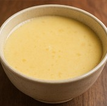

Steamed Egg Custard (蒸蛋羹)
Home

Ingredients
2 eggs
1 cup warm water or milk
2–3 tsp sugar
Instructions
Mix and strain eggs with water and sugar.
Steam gently, covered, for 10–12 minutes.
Other Recipes You Might Like
Tang Yuan
Honey Lemon Tea
Soy Milk